1.5 Redes Generativas Adversariales (GANs)#
Este notebook cubre las GANs desde sus fundamentos matematicos hasta implementaciones practicas en PyTorch. Se desarrollan cuatro variantes con complejidad creciente: la GAN vanilla original, la DCGAN (con capas convolucionales), la GAN condicional (cGAN) y la WGAN-GP (con gradiente penalizado).
El dataset utilizado es MNIST, lo que permite comparar resultados directamente con el notebook de autoencoders y observar como cada arquitectura resuelve el problema de generacion.
Contenidos#
Fundamentos matematicos
Preparacion del entorno y datos
GAN vanilla (MLP)
DCGAN (convolucional)
GAN Condicional (cGAN)
WGAN con gradiente penalizado (WGAN-GP)
Problemas comunes y diagnostico
Evaluacion: FID simplificado
Comparativa de variantes
1. Fundamentos matematicos#
El juego adversarial#
Una GAN (Goodfellow et al., 2014) formula la generacion como un juego de suma cero entre dos redes:
Generador \(G_\theta\): recibe un vector de ruido \(z \sim p_z\) y produce una muestra sintetica \(G(z)\).
Discriminador \(D_\phi\): recibe una muestra (real o sintetica) y produce la probabilidad de que sea real, \(D(x) \in [0,1]\).
Funcion objetivo#
El objetivo es el juego minimax:
\(D\) maximiza: asigna probabilidades altas a datos reales (\(D(x) \to 1\)) y bajas a datos falsos (\(D(G(z)) \to 0\)).
\(G\) minimiza: intenta que \(D(G(z)) \to 1\), es decir, engana al discriminador.
Equilibrio de Nash#
El equilibrio teorico ocurre cuando \(G\) reproduce perfectamente la distribucion real \(p_{\text{data}}\), y el discriminador ya no puede distinguir: \(D(x) = 0.5\) para todo \(x\). En ese punto, \(G\) ha aprendido a generar muestras indistinguibles de los datos reales.
Perdida alternativa para G (no saturante)#
En la practica, minimizar \(\log(1 - D(G(z)))\) produce gradientes muy pequenos al inicio (cuando G es malo y D es bueno). Se usa en su lugar la perdida no saturante:
Esta formulacion maximiza \(\log D(G(z))\) en lugar de minimizar \(\log(1 - D(G(z)))\), produciendo gradientes mas fuertes en las etapas tempranas del entrenamiento.
2. Preparacion del entorno y datos#
import torch
import torch.nn as nn
import torch.optim as optim
import torch.nn.functional as F
from torch.utils.data import DataLoader
import torchvision
import torchvision.transforms as transforms
import numpy as np
import matplotlib.pyplot as plt
import matplotlib.gridspec as gridspec
from collections import defaultdict
# Reproducibilidad
torch.manual_seed(42)
np.random.seed(42)
device = torch.device('cuda' if torch.cuda.is_available() else 'cpu')
print(f'Dispositivo : {device}')
print(f'PyTorch : {torch.__version__}')
Dispositivo : cuda
PyTorch : 2.10.0+cu128
# Las imagenes se normalizan a [-1, 1] en lugar de [0, 1]
# porque la salida del generador usara Tanh, que produce valores en ese rango
transform = transforms.Compose([
transforms.ToTensor(),
transforms.Normalize(mean=(0.5,), std=(0.5,)) # [0,1] -> [-1, 1]
])
BATCH_SIZE = 128
train_dataset = torchvision.datasets.MNIST(
root='./data', train=True, transform=transform, download=True
)
train_loader = DataLoader(
train_dataset, batch_size=BATCH_SIZE, shuffle=True, drop_last=True
)
print(f'Ejemplos de entrenamiento : {len(train_dataset):,}')
print(f'Batches por epoca : {len(train_loader)}')
print(f'Forma de una imagen : {train_dataset[0][0].shape}')
print()
print('Nota: los pixeles estan normalizados en [-1, 1] para coincidir con la salida Tanh del generador.')
100%|██████████| 9.91M/9.91M [00:00<00:00, 17.6MB/s]
100%|██████████| 28.9k/28.9k [00:00<00:00, 483kB/s]
100%|██████████| 1.65M/1.65M [00:00<00:00, 4.44MB/s]
100%|██████████| 4.54k/4.54k [00:00<00:00, 11.9MB/s]
Ejemplos de entrenamiento : 60,000
Batches por epoca : 468
Forma de una imagen : torch.Size([1, 28, 28])
Nota: los pixeles estan normalizados en [-1, 1] para coincidir con la salida Tanh del generador.
# Constantes globales
IMG_SIZE = 28 * 28 # dimension de imagen aplanada
Z_DIM = 100 # dimension del vector de ruido (espacio latente)
IMG_CH = 1 # canales de imagen (escala de grises)
def show_grid(imgs, title='', nrow=8, figsize=(14, 4)):
"""
Muestra un grid de imagenes tensores.
Asume imagenes en [-1, 1] y las convierte a [0, 1] para visualizar.
"""
imgs = (imgs.clamp(-1, 1) + 1) / 2 # [-1,1] -> [0,1]
grid = torchvision.utils.make_grid(imgs[:nrow*2], nrow=nrow, padding=2)
plt.figure(figsize=figsize)
plt.imshow(grid.permute(1, 2, 0).squeeze(), cmap='gray')
plt.title(title, fontsize=13)
plt.axis('off')
plt.tight_layout()
plt.show()
# Visualizar datos reales
reales, _ = next(iter(train_loader))
show_grid(reales[:16], title='Imagenes reales de MNIST (normalizadas a [-1, 1])', nrow=8, figsize=(14, 3))
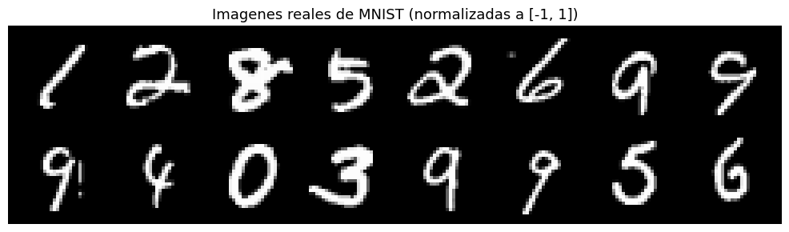
3. GAN Vanilla (MLP)#
La arquitectura original de Goodfellow et al. (2014). Tanto el generador como el discriminador son redes totalmente conectadas (MLP).
Generador:
z (100) -> Linear -> LeakyReLU -> Linear -> LeakyReLU -> Linear -> Tanh -> imagen (784)
Discriminador:
imagen (784) -> Linear -> LeakyReLU -> Dropout -> Linear -> LeakyReLU -> Dropout -> Linear -> Sigmoid
Notas de diseno:
LeakyReLU en lugar de ReLU en el discriminador: evita gradientes en cero para valores negativos, lo que ayuda al flujo del gradiente.
Dropout en el discriminador: actua como regularizacion para evitar que D sea demasiado poderoso y mate los gradientes de G.
Tanh en la salida de G: produce valores en \([-1, 1]\), mismo rango que los datos reales normalizados.
Sigmoid en la salida de D: interpreta la salida como probabilidad de ser real.
class VanillaGenerator(nn.Module):
"""
Generador MLP de la GAN original.
Transforma un vector de ruido z en una imagen sintetica.
"""
def __init__(self, z_dim=100, img_size=784):
super().__init__()
self.net = nn.Sequential(
nn.Linear(z_dim, 256),
nn.LeakyReLU(0.2),
nn.Linear(256, 512),
nn.LeakyReLU(0.2),
nn.Linear(512, 1024),
nn.LeakyReLU(0.2),
nn.Linear(1024, img_size),
nn.Tanh(), # salida en [-1, 1]
)
def forward(self, z):
img = self.net(z) # (batch, 784)
return img.view(-1, 1, 28, 28) # (batch, 1, 28, 28)
class VanillaDiscriminator(nn.Module):
"""
Discriminador MLP.
Clasifica una imagen como real (1) o falsa (0).
"""
def __init__(self, img_size=784):
super().__init__()
self.net = nn.Sequential(
nn.Linear(img_size, 1024),
nn.LeakyReLU(0.2),
nn.Dropout(0.3),
nn.Linear(1024, 512),
nn.LeakyReLU(0.2),
nn.Dropout(0.3),
nn.Linear(512, 256),
nn.LeakyReLU(0.2),
nn.Linear(256, 1),
nn.Sigmoid(), # probabilidad de ser real
)
def forward(self, img):
img = img.view(img.size(0), -1) # aplanar: (batch, 1, 28, 28) -> (batch, 784)
return self.net(img) # (batch, 1)
# Instanciar
G_vanilla = VanillaGenerator(z_dim=Z_DIM).to(device)
D_vanilla = VanillaDiscriminator().to(device)
params_G = sum(p.numel() for p in G_vanilla.parameters())
params_D = sum(p.numel() for p in D_vanilla.parameters())
print(f'Parametros del Generador : {params_G:,}')
print(f'Parametros del Discriminador : {params_D:,}')
Parametros del Generador : 1,486,352
Parametros del Discriminador : 1,460,225
def train_vanilla_gan(G, D, loader, epochs=30, lr=2e-4, z_dim=100):
"""
Entrenamiento de la GAN vanilla.
El bucle alterna entre:
1. Actualizar D: maximiza log D(x) + log(1 - D(G(z)))
2. Actualizar G: maximiza log D(G(z)) [perdida no saturante]
Las etiquetas reales usan label smoothing (0.9 en vez de 1.0)
para estabilizar el entrenamiento de D.
"""
criterion = nn.BCELoss()
opt_G = optim.Adam(G.parameters(), lr=lr, betas=(0.5, 0.999))
opt_D = optim.Adam(D.parameters(), lr=lr, betas=(0.5, 0.999))
# Beta1=0.5 es una convencion en GANs; 0.9 (default) tiende a oscilar
history = defaultdict(list)
# Vector de ruido fijo para monitorear visualmente la evolucion de G
fixed_z = torch.randn(16, z_dim).to(device)
for epoch in range(1, epochs + 1):
loss_D_total = loss_G_total = 0.0
G.train(); D.train()
for real_imgs, _ in loader:
real_imgs = real_imgs.to(device)
bs = real_imgs.size(0)
# Etiquetas con label smoothing: 0.9 para reales, 0.0 para falsos
real_labels = torch.full((bs, 1), 0.9, device=device)
fake_labels = torch.zeros((bs, 1), device=device)
# ---- Paso 1: Entrenar el Discriminador ----
# G se congela implicitamente al no llamar opt_G.step()
z = torch.randn(bs, z_dim, device=device)
fake_imgs = G(z).detach() # .detach() evita calcular gradientes en G
loss_real = criterion(D(real_imgs), real_labels)
loss_fake = criterion(D(fake_imgs), fake_labels)
loss_D = (loss_real + loss_fake) / 2
opt_D.zero_grad()
loss_D.backward()
opt_D.step()
# ---- Paso 2: Entrenar el Generador ----
# G quiere que D clasifique sus imagenes como reales
z = torch.randn(bs, z_dim, device=device)
fake_imgs = G(z)
loss_G = criterion(D(fake_imgs), real_labels) # perdida no saturante
opt_G.zero_grad()
loss_G.backward()
opt_G.step()
loss_D_total += loss_D.item()
loss_G_total += loss_G.item()
n = len(loader)
history['D'].append(loss_D_total / n)
history['G'].append(loss_G_total / n)
if epoch % 10 == 0 or epoch == 1:
print(f'Epoca {epoch:3d}/{epochs} | Loss D: {loss_D_total/n:.4f} | Loss G: {loss_G_total/n:.4f}')
# Generar imagenes de prueba con el vector fijo
G.eval()
with torch.no_grad():
samples = G(fixed_z).cpu()
show_grid(samples, title=f'GAN vanilla - Epoca {epoch}', nrow=8, figsize=(14, 3))
return history
print('Entrenando GAN vanilla...')
history_vanilla = train_vanilla_gan(G_vanilla, D_vanilla, train_loader, epochs=30)
Entrenando GAN vanilla...
Epoca 1/30 | Loss D: 0.4549 | Loss G: 2.0860
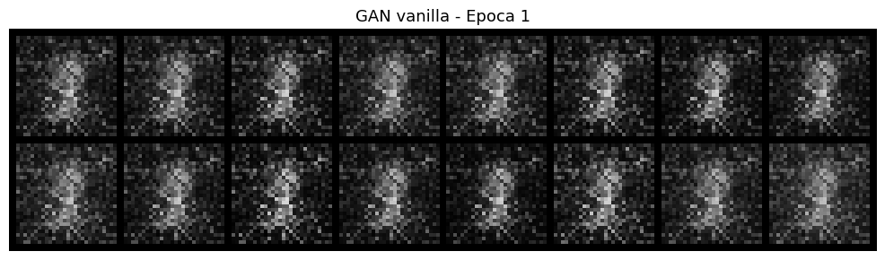
Epoca 10/30 | Loss D: 0.4555 | Loss G: 1.8374
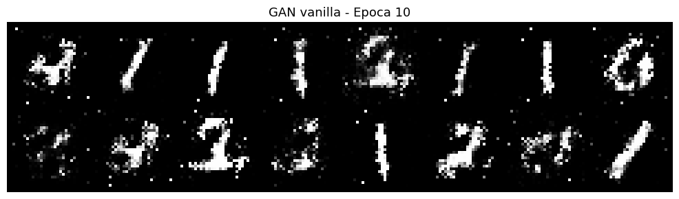
Epoca 20/30 | Loss D: 0.5455 | Loss G: 1.3463
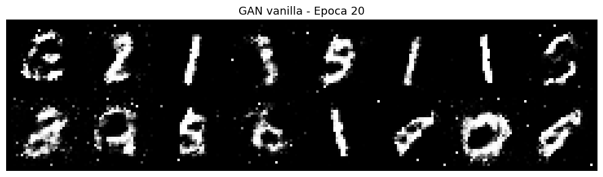
Epoca 30/30 | Loss D: 0.5465 | Loss G: 1.3097
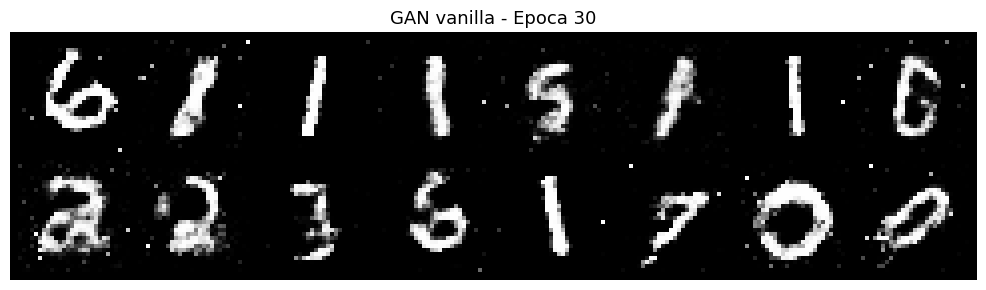
def plot_gan_losses(history, title='Curvas de entrenamiento GAN'):
"""
Grafica las perdidas del generador y discriminador a lo largo del entrenamiento.
En una GAN bien entrenada:
- La perdida de D converge a ~0.69 (log 2, equivale a 50% de acierto)
- La perdida de G se mantiene estable sin divergir
"""
plt.figure(figsize=(9, 4))
plt.plot(history['D'], label='Discriminador (D)', color='crimson', linewidth=2)
plt.plot(history['G'], label='Generador (G)', color='steelblue', linewidth=2)
plt.axhline(y=np.log(2), color='gray', linestyle='--', linewidth=1,
label=f'Equilibrio teorico (ln 2 ≈ {np.log(2):.3f})')
plt.xlabel('Epoca')
plt.ylabel('Perdida (BCE)')
plt.title(title)
plt.legend()
plt.grid(True, alpha=0.3)
plt.tight_layout()
plt.show()
plot_gan_losses(history_vanilla, 'Curvas de entrenamiento - GAN vanilla')
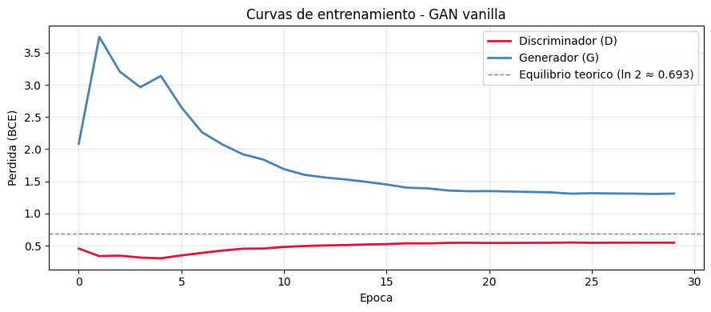
Interpretacion de las curvas#
El equilibrio teorico de la GAN se alcanza cuando la perdida del discriminador converge a \(\ln 2 \approx 0.693\), que corresponde a un acierto del 50%: D ya no puede distinguir reales de falsos. En la practica, las curvas oscilan, pero si la perdida de D colapsa a 0 significa que D es demasiado poderoso y G no puede aprender. Si la perdida de G diverge, G se ha colapsado a producir un solo tipo de imagen (mode collapse).
4. DCGAN — Deep Convolutional GAN#
Radford et al. (2015) estabilizaron el entrenamiento de GANs introduciendo un conjunto de reglas arquitectonicas basadas en convoluciones.
Reglas de la DCGAN:
Componente |
Regla |
|---|---|
Pooling |
Eliminado. Se usa stride en Conv y ConvTranspose |
Batch Normalization |
En todas las capas, excepto entrada de D y salida de G |
Capas densas |
Eliminadas completamente |
Activacion en G |
ReLU en capas ocultas, Tanh en salida |
Activacion en D |
LeakyReLU(0.2) en todas las capas |
Arquitectura para imagenes 28x28:
Generador:
z (100) -> Linear -> Reshape (256, 7, 7)
-> ConvT(128, 4, stride=2) -> BN -> ReLU -> (128, 14, 14)
-> ConvT( 64, 4, stride=2) -> BN -> ReLU -> ( 64, 28, 28)
-> Conv ( 1, 3, stride=1) -> Tanh -> ( 1, 28, 28)
Discriminador:
(1, 28, 28)
-> Conv( 64, 4, stride=2) -> LeakyReLU -> (64, 13, 13)
-> Conv(128, 4, stride=2) -> BN -> LeakyReLU -> (128, 5, 5)
-> Flatten -> Linear -> Sigmoid
def weights_init(m):
"""
Inicializacion de pesos recomendada para DCGAN:
pesos de Conv y BN con distribucion normal estrecha.
Esto estabiliza el entrenamiento desde la primera epoca.
"""
classname = m.__class__.__name__
if 'Conv' in classname:
nn.init.normal_(m.weight.data, 0.0, 0.02)
elif 'BatchNorm' in classname:
nn.init.normal_(m.weight.data, 1.0, 0.02)
nn.init.constant_(m.bias.data, 0)
class DCGenerator(nn.Module):
"""
Generador DCGAN.
Usa ConvTranspose2d para aumentar progresivamente la resolucion espacial.
BN estabiliza el entrenamiento normalizando las activaciones por batch.
"""
def __init__(self, z_dim=100, features=64):
super().__init__()
# Proyectar z al primer mapa de caracteristicas espacial
self.fc = nn.Sequential(
nn.Linear(z_dim, features * 4 * 7 * 7),
nn.ReLU(),
)
self.conv_blocks = nn.Sequential(
# (features*4, 7, 7) -> (features*2, 14, 14)
nn.ConvTranspose2d(features * 4, features * 2,
kernel_size=4, stride=2, padding=1, bias=False),
nn.BatchNorm2d(features * 2),
nn.ReLU(inplace=True),
# (features*2, 14, 14) -> (features, 28, 28)
nn.ConvTranspose2d(features * 2, features,
kernel_size=4, stride=2, padding=1, bias=False),
nn.BatchNorm2d(features),
nn.ReLU(inplace=True),
# (features, 28, 28) -> (1, 28, 28) [sin BN en la capa de salida]
nn.Conv2d(features, 1, kernel_size=3, stride=1, padding=1, bias=False),
nn.Tanh(),
)
self.features = features
def forward(self, z):
x = self.fc(z)
x = x.view(-1, self.features * 4, 7, 7)
return self.conv_blocks(x)
class DCDiscriminator(nn.Module):
def __init__(self, features=64):
super().__init__()
self.net = nn.Sequential(
# (1, 28, 28) -> (features, 14, 14)
nn.Conv2d(1, features, kernel_size=4, stride=2, padding=1, bias=False),
nn.LeakyReLU(0.2, inplace=True),
# (features, 14, 14) -> (features*2, 7, 7)
nn.Conv2d(features, features * 2, kernel_size=4, stride=2, padding=1, bias=False),
nn.BatchNorm2d(features * 2),
nn.LeakyReLU(0.2, inplace=True),
)
self.classifier = nn.Sequential(
nn.Flatten(),
nn.Linear(features * 2 * 7 * 7, 1), # 128 * 7 * 7 = 6272
nn.Sigmoid(),
)
def forward(self, img):
return self.classifier(self.net(img))
G_dc = DCGenerator(z_dim=Z_DIM, features=64).to(device)
D_dc = DCDiscriminator(features=64).to(device)
G_dc.apply(weights_init)
D_dc.apply(weights_init)
params_G = sum(p.numel() for p in G_dc.parameters())
params_D = sum(p.numel() for p in D_dc.parameters())
print(f'Parametros del Generador : {params_G:,}')
print(f'Parametros del Discriminador : {params_D:,}')
# Verificar que las dimensiones son correctas antes de entrenar
with torch.no_grad():
dummy_img = torch.randn(2, 1, 28, 28).to(device)
dummy_z = torch.randn(2, Z_DIM).to(device)
out_G = G_dc(dummy_z)
out_D = D_dc(dummy_img)
print(f'Salida del Generador : {out_G.shape}')
print(f'Salida del Discriminador : {out_D.shape}')
Parametros del Generador : 1,923,264
Parametros del Discriminador : 138,625
Salida del Generador : torch.Size([2, 1, 28, 28])
Salida del Discriminador : torch.Size([2, 1])
# El bucle de entrenamiento es identico al de la GAN vanilla
# La diferencia esta en la arquitectura, no en el algoritmo
print('Entrenando DCGAN...')
history_dc = train_vanilla_gan(G_dc, D_dc, train_loader, epochs=30)
plot_gan_losses(history_dc, 'Curvas de entrenamiento - DCGAN')
Entrenando DCGAN...
Epoca 1/30 | Loss D: 0.4614 | Loss G: 1.3947
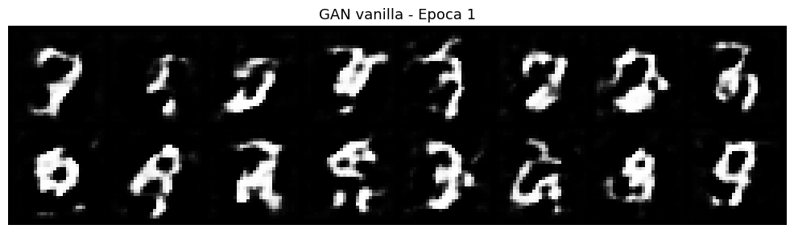
Epoca 10/30 | Loss D: 0.5582 | Loss G: 1.2064
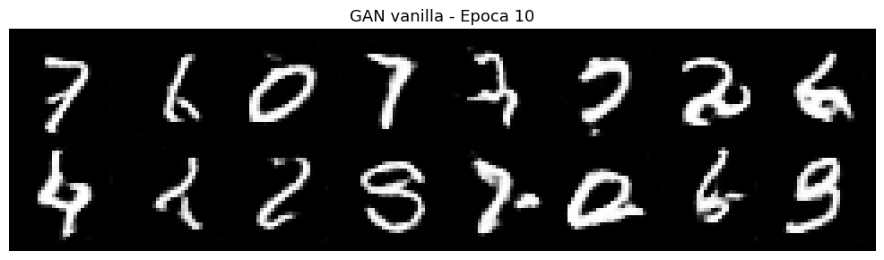
Epoca 20/30 | Loss D: 0.5732 | Loss G: 1.1551
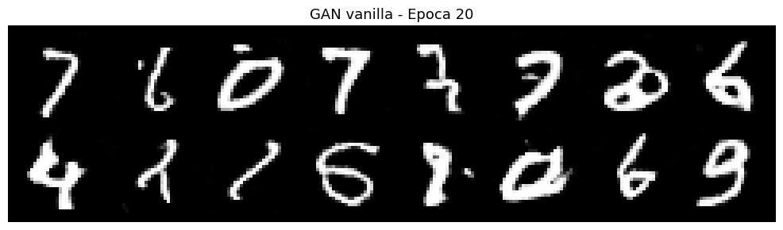
Epoca 30/30 | Loss D: 0.5939 | Loss G: 1.0970
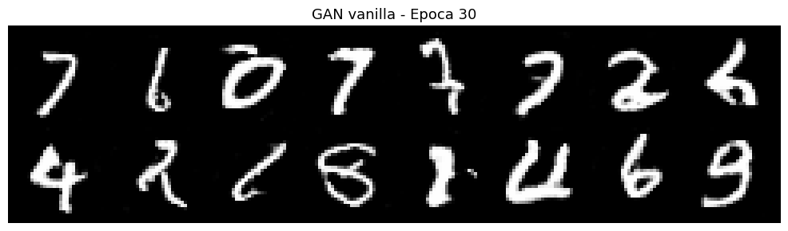
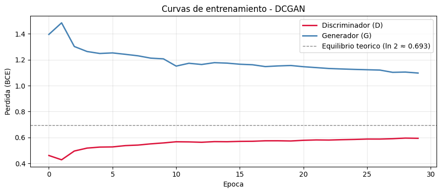
# Comparar muestras: GAN vanilla vs DCGAN
fixed_z = torch.randn(16, Z_DIM, device=device)
for G, nombre in [(G_vanilla, 'GAN Vanilla (MLP)'), (G_dc, 'DCGAN (Convolucional)')]:
G.eval()
with torch.no_grad():
samples = G(fixed_z).cpu()
show_grid(samples, title=f'Muestras generadas - {nombre}', nrow=8, figsize=(14, 3))
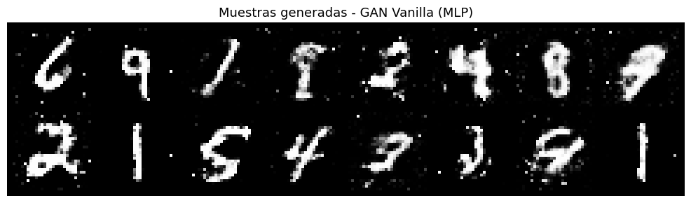
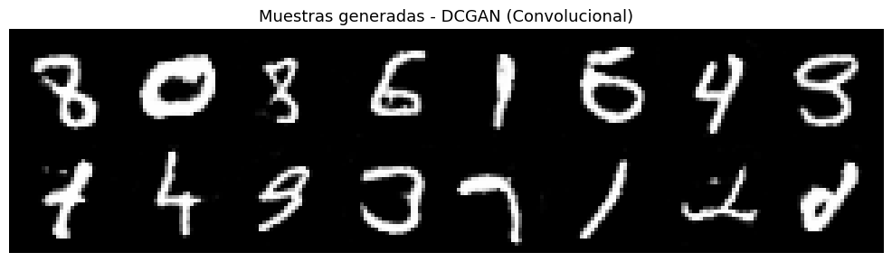
5. GAN Condicional (cGAN)#
La GAN vanilla genera imagenes aleatorias sin control sobre el contenido. La cGAN (Mirza & Osindero, 2014) introduce una condicion \(y\) (por ejemplo, la etiqueta de clase) en ambas redes:
Esto permite controlar exactamente que digito se genera simplemente cambiando la etiqueta \(y\) que se pasa al generador.
Implementacion: la condicion se incorpora mediante un embedding de clase que se concatena al vector de ruido \(z\) en G, y a la imagen aplanada en D.
N_CLASSES = 10 # MNIST tiene 10 clases (digitos 0-9)
EMBED_DIM = 50 # dimension del embedding de clase
class ConditionalGenerator(nn.Module):
"""
Generador condicional.
Recibe z (ruido) y y (etiqueta de clase) y genera una imagen del digito y.
La condicion se inyecta concatenando un embedding de clase al vector z.
El embedding convierte el entero de clase en un vector denso aprendible.
"""
def __init__(self, z_dim=100, n_classes=10, embed_dim=50, img_size=784):
super().__init__()
# Embedding: mapea cada clase a un vector de dimension embed_dim
self.class_embed = nn.Embedding(n_classes, embed_dim)
self.net = nn.Sequential(
nn.Linear(z_dim + embed_dim, 256),
nn.LeakyReLU(0.2),
nn.BatchNorm1d(256),
nn.Linear(256, 512),
nn.LeakyReLU(0.2),
nn.BatchNorm1d(512),
nn.Linear(512, 1024),
nn.LeakyReLU(0.2),
nn.BatchNorm1d(1024),
nn.Linear(1024, img_size),
nn.Tanh(),
)
def forward(self, z, y):
# Convertir etiqueta y en vector de embedding
y_embed = self.class_embed(y) # (batch, embed_dim)
# Concatenar ruido y embedding de clase
inp = torch.cat([z, y_embed], dim=1) # (batch, z_dim + embed_dim)
out = self.net(inp)
return out.view(-1, 1, 28, 28)
class ConditionalDiscriminator(nn.Module):
"""
Discriminador condicional.
Evalua si la imagen x ES una imagen real de la clase y.
No basta con que la imagen parezca real: debe ser del tipo correcto.
"""
def __init__(self, n_classes=10, embed_dim=50, img_size=784):
super().__init__()
self.class_embed = nn.Embedding(n_classes, embed_dim)
self.net = nn.Sequential(
# Entrada: imagen aplanada + embedding de clase
nn.Linear(img_size + embed_dim, 1024),
nn.LeakyReLU(0.2),
nn.Dropout(0.3),
nn.Linear(1024, 512),
nn.LeakyReLU(0.2),
nn.Dropout(0.3),
nn.Linear(512, 256),
nn.LeakyReLU(0.2),
nn.Linear(256, 1),
nn.Sigmoid(),
)
def forward(self, img, y):
img_flat = img.view(img.size(0), -1) # (batch, 784)
y_embed = self.class_embed(y) # (batch, embed_dim)
inp = torch.cat([img_flat, y_embed], dim=1) # (batch, 784 + embed_dim)
return self.net(inp)
G_cond = ConditionalGenerator(Z_DIM, N_CLASSES, EMBED_DIM).to(device)
D_cond = ConditionalDiscriminator(N_CLASSES, EMBED_DIM).to(device)
print(f'Parametros del Generador condicional : {sum(p.numel() for p in G_cond.parameters()):,}')
print(f'Parametros del Discriminador condicional : {sum(p.numel() for p in D_cond.parameters()):,}')
Parametros del Generador condicional : 1,503,236
Parametros del Discriminador condicional : 1,511,925
def train_cgan(G, D, loader, epochs=30, lr=2e-4, z_dim=100):
"""
Entrenamiento de la cGAN.
La diferencia con el entrenamiento vanilla:
- En el paso de D: las etiquetas reales de clase se pasan a D con la imagen real
y con la imagen falsa (para que D evalue si la imagen corresponde a la clase).
- En el paso de G: se generan clases aleatorias y G debe producir imagenes
que D clasifique como reales para esa clase especifica.
"""
criterion = nn.BCELoss()
opt_G = optim.Adam(G.parameters(), lr=lr, betas=(0.5, 0.999))
opt_D = optim.Adam(D.parameters(), lr=lr, betas=(0.5, 0.999))
history = defaultdict(list)
# Vector fijo para visualizacion: 1 muestra por clase (0-9)
fixed_z = torch.randn(N_CLASSES * 2, z_dim, device=device)
fixed_y = torch.arange(N_CLASSES, device=device).repeat(2).sort().values
for epoch in range(1, epochs + 1):
loss_D_total = loss_G_total = 0.0
G.train(); D.train()
for real_imgs, real_labels in loader:
real_imgs = real_imgs.to(device)
real_labels = real_labels.to(device)
bs = real_imgs.size(0)
real_targets = torch.full((bs, 1), 0.9, device=device)
fake_targets = torch.zeros((bs, 1), device=device)
# Paso 1: Discriminador
z = torch.randn(bs, z_dim, device=device)
rand_labels = torch.randint(0, N_CLASSES, (bs,), device=device)
fake_imgs = G(z, rand_labels).detach()
# D evalua imagen real con su etiqueta real
loss_real = criterion(D(real_imgs, real_labels), real_targets)
# D evalua imagen falsa con la etiqueta que G intento generar
loss_fake = criterion(D(fake_imgs, rand_labels), fake_targets)
loss_D = (loss_real + loss_fake) / 2
opt_D.zero_grad()
loss_D.backward()
opt_D.step()
# Paso 2: Generador
z = torch.randn(bs, z_dim, device=device)
rand_labels = torch.randint(0, N_CLASSES, (bs,), device=device)
fake_imgs = G(z, rand_labels)
loss_G = criterion(D(fake_imgs, rand_labels), real_targets)
opt_G.zero_grad()
loss_G.backward()
opt_G.step()
loss_D_total += loss_D.item()
loss_G_total += loss_G.item()
n = len(loader)
history['D'].append(loss_D_total / n)
history['G'].append(loss_G_total / n)
if epoch % 10 == 0 or epoch == 1:
print(f'Epoca {epoch:3d}/{epochs} | Loss D: {loss_D_total/n:.4f} | Loss G: {loss_G_total/n:.4f}')
G.eval()
with torch.no_grad():
samples = G(fixed_z, fixed_y).cpu()
show_grid(samples, title=f'cGAN - Epoca {epoch} (clases 0-9, x2)', nrow=10, figsize=(14, 3))
return history
print('Entrenando cGAN...')
history_cgan = train_cgan(G_cond, D_cond, train_loader, epochs=30)
plot_gan_losses(history_cgan, 'Curvas de entrenamiento - cGAN')
Entrenando cGAN...
Epoca 1/30 | Loss D: 0.2118 | Loss G: 5.4623
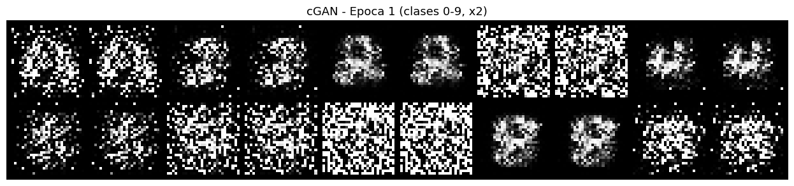
Epoca 10/30 | Loss D: 0.3816 | Loss G: 8.0952
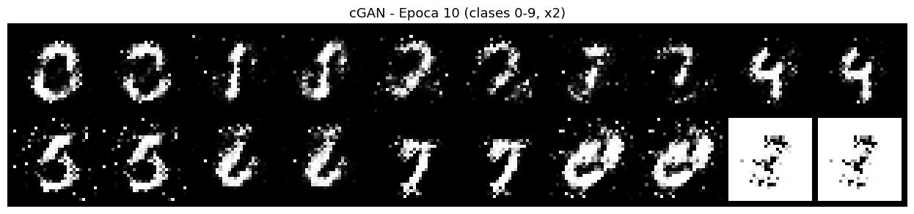
Epoca 20/30 | Loss D: 0.5799 | Loss G: 3.4963
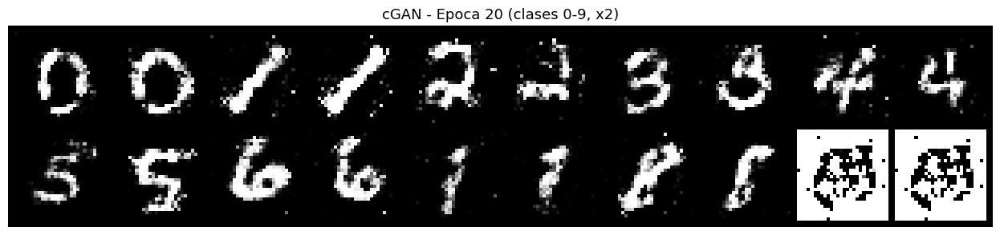
Epoca 30/30 | Loss D: 0.6565 | Loss G: 0.8957
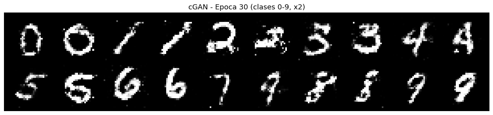
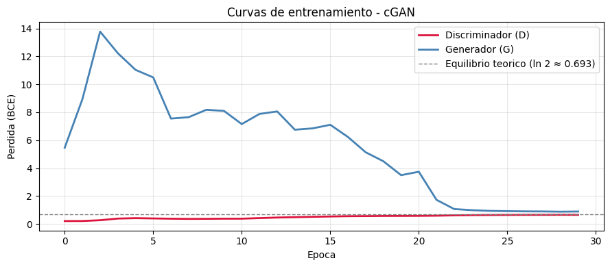
# Demostracion del control por clase: generar el mismo ruido z con distintas etiquetas
G_cond.eval()
n_per_class = 8
fig, axes = plt.subplots(N_CLASSES, n_per_class, figsize=(n_per_class * 1.5, N_CLASSES * 1.5))
with torch.no_grad():
for digit in range(N_CLASSES):
z = torch.randn(n_per_class, Z_DIM, device=device)
labels = torch.full((n_per_class,), digit, dtype=torch.long, device=device)
imgs = G_cond(z, labels).cpu()
imgs = (imgs.clamp(-1, 1) + 1) / 2 # -> [0, 1]
for i in range(n_per_class):
axes[digit, i].imshow(imgs[i].squeeze(), cmap='gray')
axes[digit, i].axis('off')
axes[digit, 0].set_ylabel(f'Digito {digit}', fontsize=9, rotation=0,
labelpad=35, va='center')
plt.suptitle('cGAN: generacion controlada por clase (cada fila = un digito)', fontsize=13)
plt.tight_layout()
plt.show()
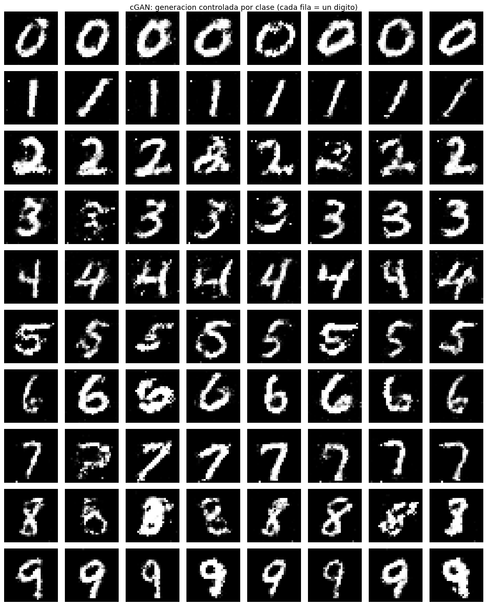
6. WGAN con Gradiente Penalizado (WGAN-GP)#
Problema de la GAN vanilla: inestabilidad por JS divergence#
La perdida BCE de la GAN original mide la divergencia Jensen-Shannon entre la distribucion real \(p_{\text{data}}\) y la generada \(p_G\). Cuando ambas distribuciones tienen soporte disjunto (frecuente al inicio del entrenamiento), la JS divergence es constante y los gradientes se anulan: G no puede aprender.
Solucion: distancia de Wasserstein#
Arjovsky et al. (2017) propusieron usar la distancia de Wasserstein (Earth Mover’s Distance) como metrica:
donde \(f\) debe ser una funcion 1-Lipschitz. El discriminador se convierte en un critico (sin Sigmoid): produce un score real, no una probabilidad.
Ventajas:
La perdida del critico es una metrica significativa de la calidad de G: si baja, G mejora.
Gradientes mas estables, incluso cuando las distribuciones no se solapan.
Mucho menos susceptible a mode collapse.
Gradient Penalty (WGAN-GP)#
La restriccion Lipschitz se impone mediante una penalizacion del gradiente (Gulrajani et al., 2017):
donde \(\hat{x}\) es un punto interpolado aleatoriamente entre un dato real y uno falso. Esto penaliza al critico si su gradiente se aleja de norma 1 en esa region del espacio.
class WGANGenerator(nn.Module):
"""
Generador para WGAN-GP. Igual al de la DCGAN.
La diferencia es que se entrena con una funcion de perdida distinta.
"""
def __init__(self, z_dim=100, features=64):
super().__init__()
self.fc = nn.Sequential(
nn.Linear(z_dim, features * 4 * 7 * 7),
nn.ReLU(),
)
self.conv = nn.Sequential(
nn.ConvTranspose2d(features * 4, features * 2,
kernel_size=4, stride=2, padding=1, bias=False),
nn.BatchNorm2d(features * 2),
nn.ReLU(inplace=True),
nn.ConvTranspose2d(features * 2, features,
kernel_size=4, stride=2, padding=1, bias=False),
nn.BatchNorm2d(features),
nn.ReLU(inplace=True),
nn.Conv2d(features, 1, kernel_size=3, stride=1, padding=1),
nn.Tanh(),
)
self.features = features
def forward(self, z):
x = self.fc(z).view(-1, self.features * 4, 7, 7)
return self.conv(x)
class WGANCritic(nn.Module):
def __init__(self, features=64):
super().__init__()
self.net = nn.Sequential(
# (1, 28, 28) -> (features, 14, 14)
nn.Conv2d(1, features, kernel_size=4, stride=2, padding=1, bias=False),
nn.LeakyReLU(0.2, inplace=True),
# (features, 14, 14) -> (features*2, 7, 7)
nn.Conv2d(features, features * 2, kernel_size=4, stride=2, padding=1, bias=False),
nn.InstanceNorm2d(features * 2, affine=True),
nn.LeakyReLU(0.2, inplace=True),
)
self.classifier = nn.Sequential(
nn.Flatten(),
nn.Linear(features * 2 * 7 * 7, 1), # 128 * 7 * 7 = 6272
# Sin Sigmoid: score real en (-inf, +inf)
)
def forward(self, img):
return self.classifier(self.net(img))
G_wgan = WGANGenerator(z_dim=Z_DIM).to(device)
C_wgan = WGANCritic().to(device)
G_wgan.apply(weights_init)
C_wgan.apply(weights_init)
print(f'Parametros del Generador : {sum(p.numel() for p in G_wgan.parameters()):,}')
print(f'Parametros del Critico : {sum(p.numel() for p in C_wgan.parameters()):,}')
Parametros del Generador : 1,923,265
Parametros del Critico : 138,625
def gradient_penalty(critic, real_imgs, fake_imgs, device, lambda_gp=10.0):
"""
Calcula la gradient penalty de WGAN-GP.
Proceso:
1. Interpolar aleatoriamente entre imagenes reales y falsas: x_hat = alpha*real + (1-alpha)*fake
2. Calcular la salida del critico para x_hat
3. Calcular el gradiente de esa salida respecto a x_hat
4. Penalizar si la norma del gradiente se aleja de 1
La penalizacion es lo que impone la restriccion Lipschitz sin clipping de pesos.
"""
bs = real_imgs.size(0)
# Coeficientes de interpolacion uniformes en [0, 1] por cada ejemplo del batch
alpha = torch.rand(bs, 1, 1, 1, device=device)
# Punto interpolado entre real y falso
x_hat = alpha * real_imgs + (1 - alpha) * fake_imgs.detach()
x_hat.requires_grad_(True) # necesario para calcular el gradiente respecto a x_hat
# Salida del critico en el punto interpolado
score = critic(x_hat)
# Calcular gradiente con create_graph=True para poder retropropagar a traves de el
grads = torch.autograd.grad(
outputs=score,
inputs=x_hat,
grad_outputs=torch.ones_like(score),
create_graph=True,
retain_graph=True,
)[0]
# Norma L2 del gradiente por ejemplo
grads_norm = grads.view(bs, -1).norm(2, dim=1)
# Penalizacion: (norma - 1)^2, promediada sobre el batch
gp = lambda_gp * ((grads_norm - 1) ** 2).mean()
return gp
def train_wgan_gp(G, C, loader, epochs=30, lr=1e-4, z_dim=100,
n_critic=5, lambda_gp=10.0):
"""
Entrenamiento de WGAN-GP.
Diferencias con el entrenamiento vanilla:
- El critico se actualiza n_critic veces por cada actualizacion de G.
Esto permite que C este bien calibrado antes de actualizar G.
- La perdida del critico es: E[C(fake)] - E[C(real)] + gradient_penalty
(se maximiza E[C(real)] - E[C(fake)], equivalente a minimizar lo anterior)
- La perdida de G es: -E[C(fake)] (G quiere maximizar el score del critico)
- No se usan etiquetas reales/falsas ni BCE.
"""
opt_G = optim.Adam(G.parameters(), lr=lr, betas=(0.0, 0.9))
opt_C = optim.Adam(C.parameters(), lr=lr, betas=(0.0, 0.9))
# beta1=0 recomendado en WGAN-GP para mayor estabilidad
history = defaultdict(list)
fixed_z = torch.randn(16, z_dim, device=device)
data_iter = iter(loader)
for epoch in range(1, epochs + 1):
loss_C_total = loss_G_total = 0.0
n_batches = 0
G.train(); C.train()
for real_imgs, _ in loader:
real_imgs = real_imgs.to(device)
bs = real_imgs.size(0)
# ---- Paso 1: Actualizar el Critico n_critic veces ----
for _ in range(n_critic):
z = torch.randn(bs, z_dim, device=device)
fake_imgs = G(z).detach()
score_real = C(real_imgs)
score_fake = C(fake_imgs)
gp = gradient_penalty(C, real_imgs, fake_imgs, device, lambda_gp)
# Minimizar: E[C(fake)] - E[C(real)] + GP
# (equivale a maximizar E[C(real)] - E[C(fake)])
loss_C = score_fake.mean() - score_real.mean() + gp
opt_C.zero_grad()
loss_C.backward()
opt_C.step()
# ---- Paso 2: Actualizar el Generador ----
z = torch.randn(bs, z_dim, device=device)
fake_imgs = G(z)
# G quiere maximizar el score del critico para sus imagenes
loss_G = -C(fake_imgs).mean()
opt_G.zero_grad()
loss_G.backward()
opt_G.step()
loss_C_total += loss_C.item()
loss_G_total += loss_G.item()
n_batches += 1
history['C'].append(loss_C_total / n_batches)
history['G'].append(loss_G_total / n_batches)
if epoch % 10 == 0 or epoch == 1:
wdist = -(loss_C_total / n_batches) # aprox. distancia Wasserstein
print(f'Epoca {epoch:3d}/{epochs} | '
f'Loss C: {loss_C_total/n_batches:.4f} | '
f'Loss G: {loss_G_total/n_batches:.4f} | '
f'W-dist aprox: {wdist:.4f}')
G.eval()
with torch.no_grad():
samples = G(fixed_z).cpu()
show_grid(samples, title=f'WGAN-GP - Epoca {epoch}', nrow=8, figsize=(14, 3))
return history
print('Entrenando WGAN-GP...')
history_wgan = train_wgan_gp(G_wgan, C_wgan, train_loader, epochs=30)
Entrenando WGAN-GP...
Epoca 1/30 | Loss C: -6.3612 | Loss G: -8.5182 | W-dist aprox: 6.3612
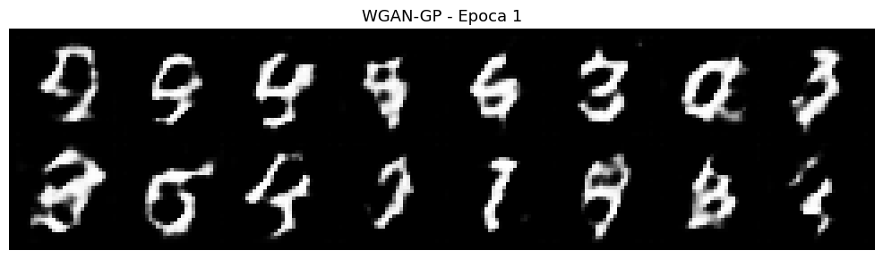
Epoca 10/30 | Loss C: -2.6777 | Loss G: -20.1471 | W-dist aprox: 2.6777
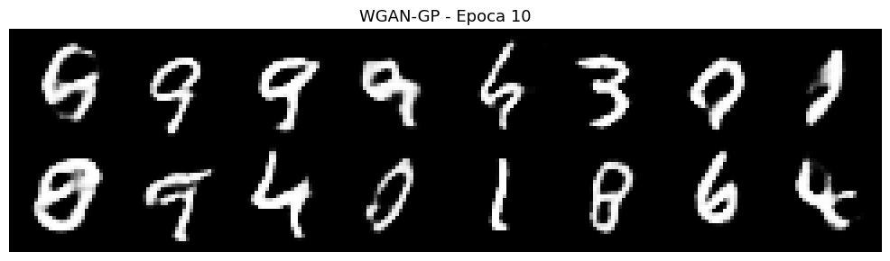
Epoca 20/30 | Loss C: -2.0882 | Loss G: -20.9197 | W-dist aprox: 2.0882
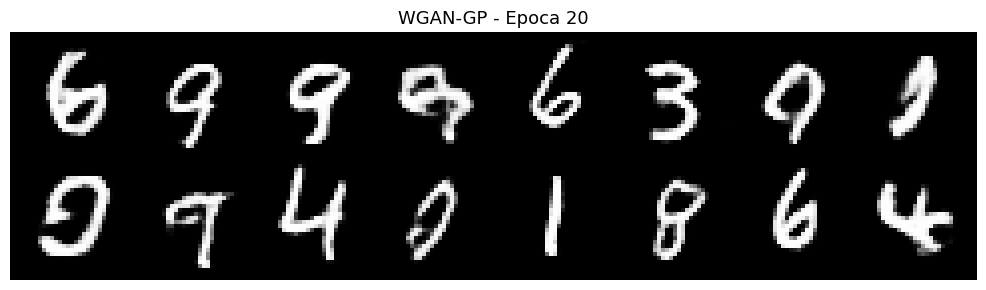
Epoca 30/30 | Loss C: -1.7973 | Loss G: -21.0795 | W-dist aprox: 1.7973
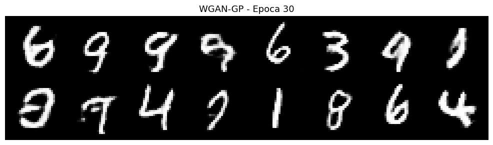
# Curvas de WGAN-GP: la perdida del critico tiene interpretacion directa
fig, axes = plt.subplots(1, 2, figsize=(12, 4))
axes[0].plot(history_wgan['C'], color='crimson', linewidth=2)
axes[0].set_title('Perdida del Critico\n(negativo aprox. de la distancia Wasserstein)')
axes[0].set_xlabel('Epoca')
axes[0].grid(True, alpha=0.3)
axes[1].plot(history_wgan['G'], color='steelblue', linewidth=2)
axes[1].set_title('Perdida del Generador\n(-E[C(fake)])')
axes[1].set_xlabel('Epoca')
axes[1].grid(True, alpha=0.3)
plt.suptitle('Curvas de entrenamiento - WGAN-GP', fontsize=13)
plt.tight_layout()
plt.show()
print('Nota: en WGAN-GP, la perdida del critico es significativa.')
print('Si disminuye (se hace mas negativa), indica que la distancia Wasserstein')
print('entre real y generado esta disminuyendo: G mejora.')
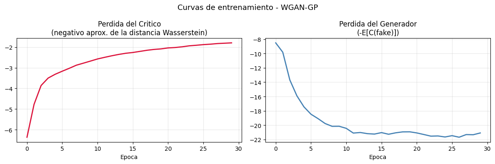
Nota: en WGAN-GP, la perdida del critico es significativa.
Si disminuye (se hace mas negativa), indica que la distancia Wasserstein
entre real y generado esta disminuyendo: G mejora.
7. Problemas comunes y diagnostico#
Entrenar GANs es notoriamente inestable. Esta seccion muestra como diagnosticar los problemas mas frecuentes.
def check_mode_collapse(G, z_dim=100, n_samples=64, device='cpu'):
"""
Detecta mode collapse midiendo la diversidad de las imagenes generadas.
Mode collapse: el generador produce casi siempre el mismo output,
independientemente del z de entrada.
Se mide como la desviacion estandar promedio sobre los pixeles:
- Alta std: G produce imagenes diversas (saludable)
- Baja std: G colapsado a unas pocas variaciones
"""
G.eval()
with torch.no_grad():
z = torch.randn(n_samples, z_dim).to(device)
imgs = G(z).cpu()
imgs = (imgs + 1) / 2 # -> [0, 1]
# std sobre el eje del batch, luego promedio sobre pixeles
diversity = imgs.std(dim=0).mean().item()
return diversity, imgs
print('Diversidad de muestras generadas (std promedio por pixel):')
print('(Valores mas altos indican mayor diversidad, valores cercanos a 0 indican mode collapse)\n')
for G, nombre in [
(G_vanilla, 'GAN Vanilla'),
(G_dc, 'DCGAN'),
(G_wgan, 'WGAN-GP'),
]:
div, _ = check_mode_collapse(G, Z_DIM, n_samples=128, device=device)
print(f' {nombre:<20} : {div:.4f}')
Diversidad de muestras generadas (std promedio por pixel):
(Valores mas altos indican mayor diversidad, valores cercanos a 0 indican mode collapse)
GAN Vanilla : 0.1832
DCGAN : 0.1892
WGAN-GP : 0.1964
# Visualizar el problema del discriminador dominante
# Si D es demasiado poderoso, los gradientes de G son casi cero
def check_gradient_flow(G, D, z_dim=100, device='cpu'):
"""
Verifica el flujo de gradiente en G.
Si la norma del gradiente es muy pequena, G no puede aprender.
Esto ocurre cuando D es demasiado poderoso.
"""
G.train(); D.eval()
z = torch.randn(32, z_dim, device=device)
fake_imgs = G(z)
score = D(fake_imgs)
# Simular perdida de G
loss_G = -score.mean() if not isinstance(D, VanillaDiscriminator) \
else F.binary_cross_entropy(score, torch.ones_like(score))
loss_G.backward()
grad_norms = []
for name, param in G.named_parameters():
if param.grad is not None:
grad_norms.append((name, param.grad.norm().item()))
G.zero_grad()
return grad_norms
print('Normas de gradiente en las capas del generador DCGAN:')
grad_norms = check_gradient_flow(G_dc, D_dc, Z_DIM, device)
for name, norm in grad_norms:
barra = '*' * int(norm * 200)
print(f' {name:<45} {norm:.6f} {barra}')
Normas de gradiente en las capas del generador DCGAN:
fc.0.weight 1.670333 **********************************************************************************************************************************************************************************************************************************************************************************************************************************************
fc.0.bias 0.185220 *************************************
conv_blocks.0.weight 1.703416 ****************************************************************************************************************************************************************************************************************************************************************************************************************************************************
conv_blocks.1.weight 0.237310 ***********************************************
conv_blocks.1.bias 0.284620 ********************************************************
conv_blocks.3.weight 2.485266 *****************************************************************************************************************************************************************************************************************************************************************************************************************************************************************************************************************************************************************************************************************
conv_blocks.4.weight 0.260169 ****************************************************
conv_blocks.4.bias 0.238605 ***********************************************
conv_blocks.6.weight 2.594529 **************************************************************************************************************************************************************************************************************************************************************************************************************************************************************************************************************************************************************************************************************************************
# Tabla de diagnostico
diagnostico = [
('Mode Collapse',
'G produce siempre el mismo output o pocas variaciones',
'WGAN-GP, Minibatch Discrimination, mayor z_dim'),
('Vanishing Gradients',
'D demasiado bueno, gradientes de G cercanos a cero',
'WGAN-GP, Feature Matching, reducir capacidad de D'),
('Inestabilidad en training',
'Perdidas oscilan fuertemente, muestras degeneran',
'Label smoothing, beta1=0.5 en Adam, BN, lr mas bajo'),
('G no mejora',
'Las muestras no cambian a lo largo de las epocas',
'Verificar gradientes, reducir actualizaciones de D, aumentar lr de G'),
('D colapsa a 0',
'D aprende demasiado rapido, loss_D -> 0 desde el inicio',
'Reducir capacidad de D, Dropout, actualizar D menos veces'),
]
print(f'{"Problema":<25} {"Sintoma":<50} {"Soluciones"}')
print('-' * 120)
for prob, sint, sol in diagnostico:
print(f'{prob:<25} {sint:<50} {sol}')
Problema Sintoma Soluciones
------------------------------------------------------------------------------------------------------------------------
Mode Collapse G produce siempre el mismo output o pocas variaciones WGAN-GP, Minibatch Discrimination, mayor z_dim
Vanishing Gradients D demasiado bueno, gradientes de G cercanos a cero WGAN-GP, Feature Matching, reducir capacidad de D
Inestabilidad en training Perdidas oscilan fuertemente, muestras degeneran Label smoothing, beta1=0.5 en Adam, BN, lr mas bajo
G no mejora Las muestras no cambian a lo largo de las epocas Verificar gradientes, reducir actualizaciones de D, aumentar lr de G
D colapsa a 0 D aprende demasiado rapido, loss_D -> 0 desde el inicio Reducir capacidad de D, Dropout, actualizar D menos veces
8. Evaluacion: FID simplificado#
Frechet Inception Distance (FID)#
El FID (Heusel et al., 2017) es la metrica estandar para evaluar GANs. Mide la distancia entre la distribucion de caracteristicas de imagenes reales y generadas, extraidas de una red Inception preentrenada:
donde \((\mu_r, \Sigma_r)\) son la media y covarianza de las caracteristicas reales y \((\mu_g, \Sigma_g)\) las de las generadas.
FID bajo = distribuciones similares = imagenes de buena calidad y diversidad.
FID = 0 = distribuciones identicas (imposible en la practica).
En esta implementacion simplificada se usa el propio discriminador como extractor de caracteristicas en lugar de Inception, ya que trabajamos en un entorno local sin necesidad de descargar pesos pesados.
def extract_features(model_feat, loader, G, z_dim, device, n_samples=1000, is_real=True):
"""
Extrae el vector de caracteristicas de imagenes reales o generadas
usando el bloque convolucional del discriminador DCGAN como extractor.
"""
model_feat.eval()
features = []
count = 0
with torch.no_grad():
if is_real:
for imgs, _ in loader:
imgs = imgs.to(device)
feat = model_feat.net(imgs).view(imgs.size(0), -1)
features.append(feat.cpu())
count += imgs.size(0)
if count >= n_samples:
break
else:
while count < n_samples:
bs = min(BATCH_SIZE, n_samples - count)
z = torch.randn(bs, z_dim, device=device)
imgs = G(z)
feat = model_feat.net(imgs).view(bs, -1)
features.append(feat.cpu())
count += bs
return torch.cat(features)[:n_samples].numpy()
def simplified_fid(real_feats, fake_feats):
"""
Calcula una version simplificada del FID usando la distancia de Frechet
entre las distribuciones de caracteristicas reales y generadas.
"""
from scipy import linalg
mu_r = real_feats.mean(axis=0)
mu_g = fake_feats.mean(axis=0)
sigma_r = np.cov(real_feats, rowvar=False)
sigma_g = np.cov(fake_feats, rowvar=False)
diff = mu_r - mu_g
covmean, _ = linalg.sqrtm(sigma_r @ sigma_g, disp=False)
if np.iscomplexobj(covmean):
covmean = covmean.real
fid = diff @ diff + np.trace(sigma_r + sigma_g - 2 * covmean)
return float(fid)
print('Calculando FID simplificado (usando features del discriminador DCGAN)...')
real_feats = extract_features(D_dc, train_loader, None, Z_DIM, device,
n_samples=1000, is_real=True)
fid_scores = {}
for G, nombre in [
(G_vanilla, 'GAN Vanilla'),
(G_dc, 'DCGAN'),
(G_wgan, 'WGAN-GP'),
]:
G.eval()
fake_feats = extract_features(D_dc, train_loader, G, Z_DIM, device,
n_samples=1000, is_real=False)
fid = simplified_fid(real_feats, fake_feats)
fid_scores[nombre] = fid
print(f' {nombre:<20} FID: {fid:.2f}')
print('\nNota: valores mas bajos indican mejor calidad y diversidad.')
print('Este FID es simplificado (no usa Inception); sirve para comparacion relativa.')
Calculando FID simplificado (usando features del discriminador DCGAN)...
/tmp/ipykernel_6916/4058660612.py:44: DeprecationWarning: The `disp` argument is deprecated and will be removed in SciPy 1.18.0.
covmean, _ = linalg.sqrtm(sigma_r @ sigma_g, disp=False)
GAN Vanilla FID: 942.78
DCGAN FID: 494.80
WGAN-GP FID: 480.60
Nota: valores mas bajos indican mejor calidad y diversidad.
Este FID es simplificado (no usa Inception); sirve para comparacion relativa.
9. Comparativa de variantes#
# Visualizar muestras finales de todas las variantes
fixed_z = torch.randn(16, Z_DIM, device=device)
fig, axes_list = plt.subplots(4, 16, figsize=(24, 7))
nombres = ['GAN Vanilla (MLP)', 'DCGAN', 'cGAN (digito 7)', 'WGAN-GP']
fixed_y7 = torch.full((16,), 7, dtype=torch.long, device=device)
generadores = [
(G_vanilla, lambda z: G_vanilla(z)),
(G_dc, lambda z: G_dc(z)),
(G_cond, lambda z: G_cond(z, fixed_y7)),
(G_wgan, lambda z: G_wgan(z)),
]
for row, (G, gen_fn), nombre in zip(range(4), generadores, nombres):
G.eval()
with torch.no_grad():
imgs = gen_fn(fixed_z).cpu()
imgs = (imgs.clamp(-1, 1) + 1) / 2
for col in range(16):
axes_list[row, col].imshow(imgs[col].squeeze(), cmap='gray')
axes_list[row, col].axis('off')
axes_list[row, 0].set_ylabel(nombre, fontsize=9, rotation=0, labelpad=85, va='center')
plt.suptitle('Comparativa de muestras generadas - todas las variantes', fontsize=13)
plt.tight_layout()
plt.show()
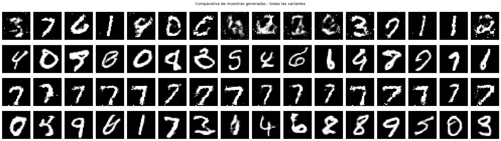
# Tabla resumen completa
print('Resumen comparativo de variantes de GAN')
print('=' * 105)
encabezado = f'{"Variante":<18} {"Arquitectura":<22} {"Perdida":<20} {"Control":<10} {"Estabilidad":<14} {"Uso principal"}'
print(encabezado)
print('-' * 105)
tabla = [
('GAN Vanilla', 'MLP', 'BCE (minimax)', 'No', 'Baja', 'Prototipado, demostracion'),
('DCGAN', 'Conv/ConvTranspose', 'BCE (no sat.)', 'No', 'Media', 'Generacion de imagenes'),
('cGAN', 'MLP + Embedding', 'BCE condicional', 'Si', 'Media', 'Generacion controlada por clase'),
('WGAN-GP', 'Conv + GP', 'Wasserstein + GP', 'No', 'Alta', 'Cuando estabilidad es critica'),
('Pix2Pix', 'U-Net + PatchGAN', 'BCE + L1', 'Si', 'Media', 'Traduccion imagen a imagen'),
('CycleGAN', 'ResNet + 2 D', 'BCE + ciclo', 'Si', 'Media', 'Traduccion sin pares anotados'),
('StyleGAN2/3', 'Mapping + Synt.', 'No-sat + R1 reg.', 'Si', 'Alta', 'Imagenes de alta resolucion'),
('BigGAN', 'Conv + Class BN', 'Hinge loss', 'Si', 'Alta', 'Datasets grandes, alta calidad'),
]
for row in tabla:
print(f'{row[0]:<18} {row[1]:<22} {row[2]:<20} {row[3]:<10} {row[4]:<14} {row[5]}')
Resumen comparativo de variantes de GAN
=========================================================================================================
Variante Arquitectura Perdida Control Estabilidad Uso principal
---------------------------------------------------------------------------------------------------------
GAN Vanilla MLP BCE (minimax) No Baja Prototipado, demostracion
DCGAN Conv/ConvTranspose BCE (no sat.) No Media Generacion de imagenes
cGAN MLP + Embedding BCE condicional Si Media Generacion controlada por clase
WGAN-GP Conv + GP Wasserstein + GP No Alta Cuando estabilidad es critica
Pix2Pix U-Net + PatchGAN BCE + L1 Si Media Traduccion imagen a imagen
CycleGAN ResNet + 2 D BCE + ciclo Si Media Traduccion sin pares anotados
StyleGAN2/3 Mapping + Synt. No-sat + R1 reg. Si Alta Imagenes de alta resolucion
BigGAN Conv + Class BN Hinge loss Si Alta Datasets grandes, alta calidad
# Grafica de diversidad de muestras
diversidades = {}
for G, nombre in [
(G_vanilla, 'GAN Vanilla'),
(G_dc, 'DCGAN'),
(G_wgan, 'WGAN-GP'),
]:
div, _ = check_mode_collapse(G, Z_DIM, 128, device)
diversidades[nombre] = div
fig, axes = plt.subplots(1, 2, figsize=(12, 4))
# FID
axes[0].barh(list(fid_scores.keys()), list(fid_scores.values()),
color=['steelblue', 'darkorange', 'seagreen'])
axes[0].set_xlabel('FID simplificado (menor = mejor)')
axes[0].set_title('FID comparativo')
axes[0].invert_yaxis()
axes[0].grid(True, axis='x', alpha=0.3)
# Diversidad
axes[1].barh(list(diversidades.keys()), list(diversidades.values()),
color=['steelblue', 'darkorange', 'seagreen'])
axes[1].set_xlabel('Diversidad (std promedio, mayor = mejor)')
axes[1].set_title('Diversidad de muestras generadas')
axes[1].invert_yaxis()
axes[1].grid(True, axis='x', alpha=0.3)
plt.suptitle('Comparativa cuantitativa de variantes GAN', fontsize=13)
plt.tight_layout()
plt.show()
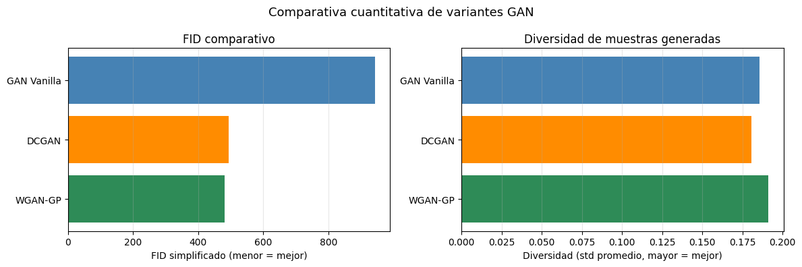
Conclusiones#
A lo largo de este notebook se implementaron cuatro variantes de GAN con complejidad y estabilidad crecientes:
GAN Vanilla: la formulacion original. Funciona, pero es fragil: susceptible a mode collapse, vanishing gradients y oscilaciones en el entrenamiento. La perdida no tiene interpretacion directa sobre la calidad de G.
DCGAN: introduce convolucion, batch normalization e inicializacion cuidadosa. El resultado es un entrenamiento mas estable y muestras de mayor calidad con menos parametros que la version densa.
cGAN: extiende cualquier GAN con condicionamiento por clase mediante embeddings aprendibles. Permite controlar exactamente que tipo de imagen se genera, lo que abre la puerta a aplicaciones de generacion dirigida (imagenes medicas por patologia, datos sinteticos por categoria, etc.).
WGAN-GP: resuelve los problemas de estabilidad sustituyendo la divergencia Jensen-Shannon por la distancia de Wasserstein y anadiendo un gradiente penalizado. La perdida del critico tiene interpretacion directa: si disminuye, G mejora. Es la variante mas robusta de las implementadas.
La eleccion de variante depende del problema:
Prototipado rapido: DCGAN.
Control de clase: cGAN.
Estabilidad critica o datos complejos: WGAN-GP.
Alta resolucion: StyleGAN2/3 o modelos de difusion.
Referencias#
Goodfellow, I., et al. (2014). Generative adversarial nets. NeurIPS 2014.
Radford, A., Metz, L., & Chintala, S. (2015). Unsupervised representation learning with deep convolutional generative adversarial networks. arXiv:1511.06434.
Mirza, M., & Osindero, S. (2014). Conditional generative adversarial nets. arXiv:1411.1784.
Arjovsky, M., Chintala, S., & Bottou, L. (2017). Wasserstein GAN. arXiv:1701.07875.
Gulrajani, I., et al. (2017). Improved training of Wasserstein GANs. NeurIPS 2017.
Heusel, M., et al. (2017). GANs trained by a two time-scale update rule converge to a local Nash equilibrium. NeurIPS 2017.